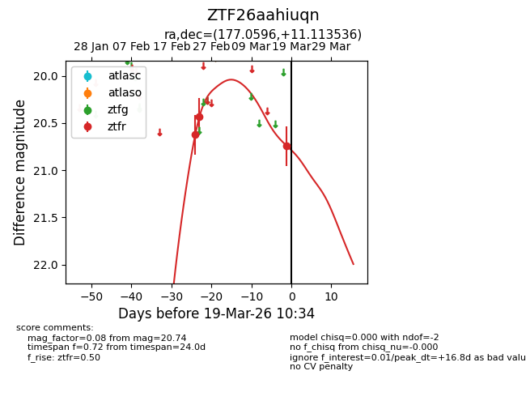
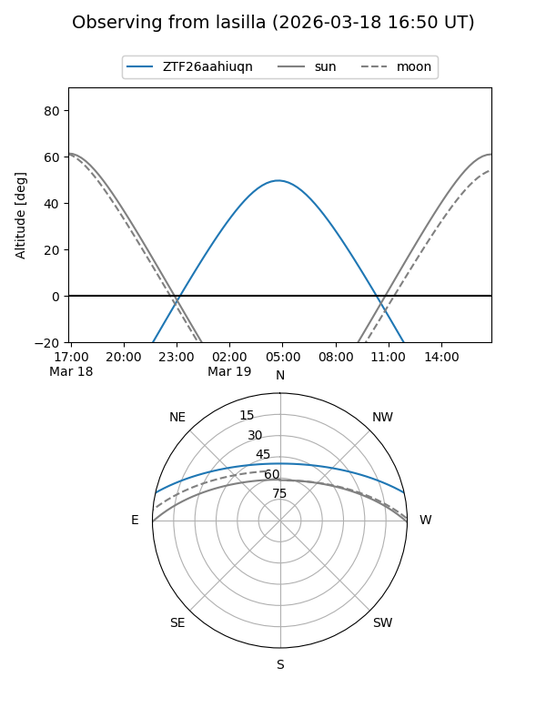
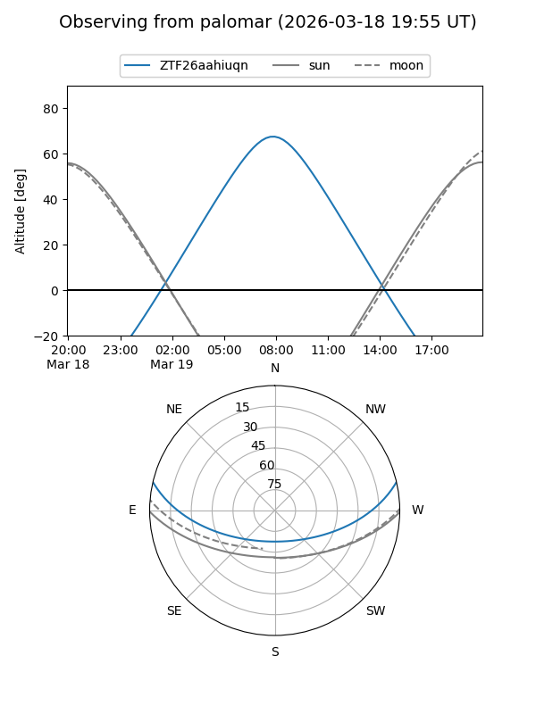
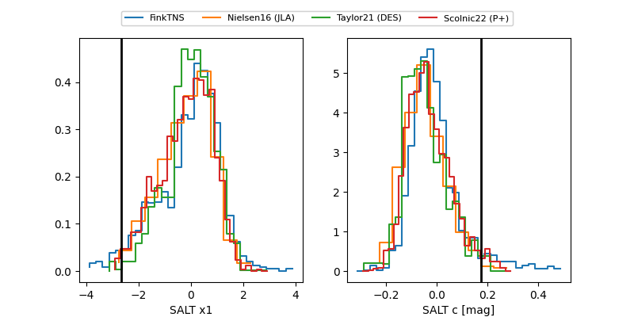

ZTF26aahiuqn
Target ZTF26aahiuqn at 2026-03-19 10:36
Aliases and brokers:
FINK: link
Lasair: link
ALeRCE: link
alt names
ZTF26aahiuqn (ztf,fink_ztf)
Coordinates:
equatorial (ra, dec) = 177.0596,+11.11354
equatorial (HMS+DMS) = 11:48:14.30,+11:06:48.73
galactic (l, b) = (257.0398,+68.15538)
Flags:
Photometry:
last ztfr=20.74
3 ztfr detections
Lightcurve

Visibility


Additional plots
